Lab 5 — Routing: Finding the Shortest Path (Student Guide)
Adapted from HKUST ISDN 2602 (Fall 2025) Laboratory 5 for secondary school students.
Original course info — GitHub Classroom: https://classroom.github.com/a/MzDeb8b5 · Deadline: Nov 5 (Wed), 2025, 23:59 · Submit code via GitHub + answer sheet as a Word file.
1. Welcome — What You Will Learn
How does Google Maps always find the fastest route? In this lab you will learn and build the answer:
- Understand graphs, weighted graphs — the mathematics behind every map and navigation app
- Learn Dijkstra's algorithm — the classic method for finding the shortest path
- Simulate the algorithm in MATLAB
- Program a real robotic car to follow a line and make decisions at a crossroad using FreeRTOS multitasking
Key words you will learn: graph · node · edge · weight · shortest path · Dijkstra's algorithm · matrix · multitasking · RTOS · task · IR sensor · truth table
2. Background — Graphs and Dijkstra's Algorithm
2.1 Graphs Are Everywhere
In mathematics, a graph is not a bar chart — it is a set of nodes (dots) connected by edges (lines). You already use graphs every day:
- The MTR map: stations are nodes, train lines are edges
- A road map: intersections are nodes, roads are edges
- Social networks: people are nodes, friendships are edges
A weighted graph adds a number (a weight, or cost) to every edge — for example, the travel time between two stations, the distance between two intersections, or the toll on a road. Weights are usually positive numbers.
2.2 The Problem: Shortest Path
Given a weighted graph, a start node and an end node, what is the cheapest route? This is exactly what your phone's map app solves every time you ask for directions.
2.3 Dijkstra's Algorithm — The Classic Solution
Dijkstra's algorithm (invented by computer scientist Edsger Dijkstra in 1956, now used in network routing and pathfinding everywhere) finds the shortest path from a start node to every other node. The idea in three steps:
- Initialization: Start at the source node. Set its distance to 0, and every other node's distance to infinity (∞) — meaning "we don't know a route there yet".
- Exploration: Visit the unvisited node with the smallest known distance. Look at its neighbours: if going through this node gives a shorter route, update the neighbour's distance.
- Repeat: Keep picking the nearest unvisited node and updating distances, until all nodes are visited (or until you reach your target).
2.4 Worked Example — Watch Dijkstra Think!
Here is a small graph (try drawing it on paper):
3 4
A -------- B ---------- C
| | |
| | 8 | 2
| +-----+------+
10| |
| D
+----------------+
Edges: A–B = 3, A–C = 10, B–C = 4, B–D = 8, C–D = 2. Find the shortest path A → D.
| Step | We visit | What we check | Distances after (A, B, C, D) |
|---|---|---|---|
| 1 | — (initial) | — | (0, ∞, ∞, ∞) |
| 2 | A (dist 0) | A→B: 0+3=3 · A→C: 0+10=10 | (0, 3, 10, ∞) |
| 3 | B (smallest = 3) | B→C: 3+4=7 < 10 update! · B→D: 3+8=11 | (0, 3, 7, 11) |
| 4 | C (smallest = 7) | C→D: 7+2=9 < 11 update! | (0, 3, 7, 9) |
| 5 | D (smallest = 9) | done! | (0, 3, 7, 9) |
Now backtrack from D: D was last updated from C, C from B, B from A. So the shortest path is A → B → C → D with total cost 9 — shorter than the direct-looking A–B–D (11) and A–C (10)! That's the magic of Dijkstra: it discovers that a "detour" through more nodes can actually be cheaper.
2.5 What Is MATLAB?
MATLAB is a programming environment loved by engineers. Its superpower is working with matrices (rectangular tables of numbers) — and a graph's weights can be stored perfectly in a matrix, as you'll see in Part I.
3. Part I — Simulating Dijkstra's Algorithm in MATLAB
Task 1 — Find the Shortest Path by Dijkstra's Algorithm
In this task we use this weighted graph:
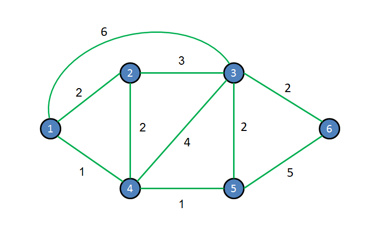
Example of a weighted graph (from the lab manual)Step 1. Open the file Task1.m in the MATLAB editor and run it.
Step 2. Understand how the graph is stored. There is an n × n array Graph(i,j) of weights/costs, where n is the number of nodes:
Graph(i,j)= the cost between nodesiandjGraph(i,j) = 0wheni = j(the cost from a node to itself is zero)Graph(i,j) = infwhen nodesiandjare not connected
So for a 4-node graph it looks like this:
Graph = [ 0 3 10 inf ;
3 0 4 8 ;
10 4 0 2 ;
inf 8 2 0 ];
Step 3. The function fun_dijkstra() finds the shortest path. It takes three inputs — the Graph array, the source node and the destination node — and returns the path and its cost:
[path, cost] = fun_dijkstra(Graph, source, dest)
The provided code finds the shortest path from node 1 to node 3 as (1 > 4 > 5 > 3) with cost = 4. Read the result and make sure you understand it.
Modify the code to find the shortest path from node 1 to node 6 and note the cost. Write your answer in the answer sheet, and show your result to the TA / instructor.
Task 2 — Create the Graph (Hong Kong Traffic Map)
Now build a real one! This map shows the traffic situation of Hong Kong:
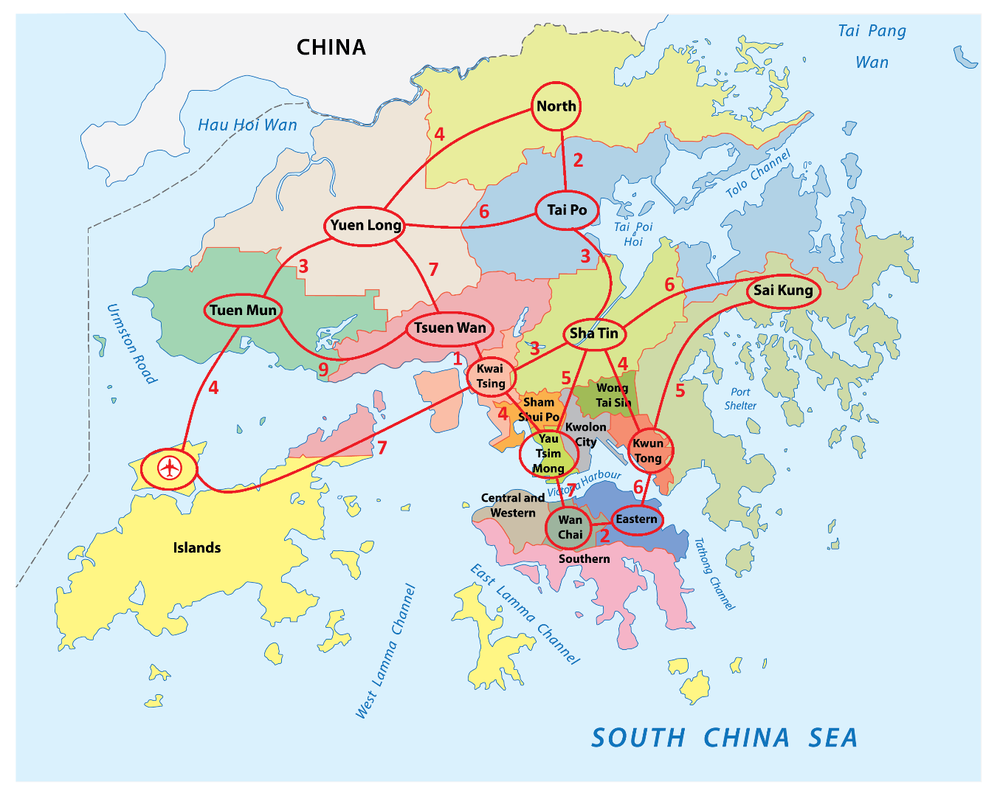
Traffic situation of Hong Kong — the red integers are the traffic costs between connected districtsThe districts are numbered as nodes:
| Node | District | Node | District |
|---|---|---|---|
| 1 | North | 8 | Kwai Tsing |
| 2 | Tai Po | 9 | Yau Tsim Mong |
| 3 | Yuen Long | 10 | Kwun Tong |
| 4 | Tuen Mun | 11 | Wan Chai |
| 5 | Tsuen Wan | 12 | Eastern |
| 6 | Sha Tin | 13 | Airport |
| 7 | Sai Kung |
Step 1. Look at the map: every red integer between two connected districts is the traffic cost for that edge.
Step 2. Open Task2.m in the MATLAB editor.
Step 3. Create the 13 × 13 weighted matrix. Tips:
- Fill the diagonal with 0
- Put the red number in
Graph(i,j)andGraph(j,i)(roads go both ways!) - Put
infeverywhere the map shows no direct connection
- Show the array you created to represent the weighted graph.
- Find the shortest path from Yuen Long (node 3) to Eastern (node 12) and its cost.
Fill in the answers, commit the revised code to GitHub, and show your result to the TA / instructor.
4. Part II — Running Dijkstra on a Real Car
Task 3 (Pre) — Meet the Robotic Car
This is the same car you will use for the final project:
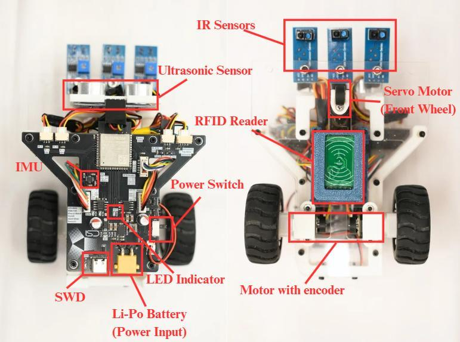
Composition of the robotic carHardware: ESP32-S3 brain, IR sensors underneath (for line tracking), ultrasonic sensor, IMU, encoder motors, RFID reader, servo front wheel, and a 7.4 V Li-Po battery. In this lab we only use the motor drivers and the IR sensors.
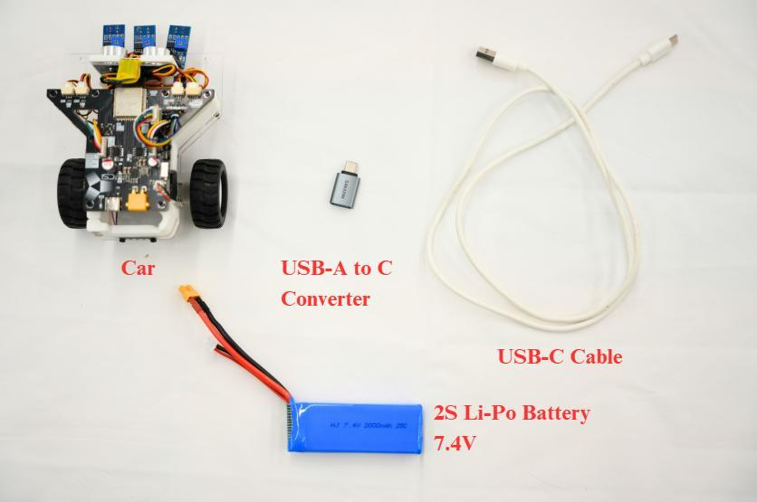
Materials for Tasks 3 & 4Code files you will open in the Arduino IDE:
IRSensors.cpp/IRSensors.hppLab06.ino(main sketch — the manual keeps this name)MotorControl.cpp/MotorControl.hppMovement.cpp/Movement.hppPinout.hpp
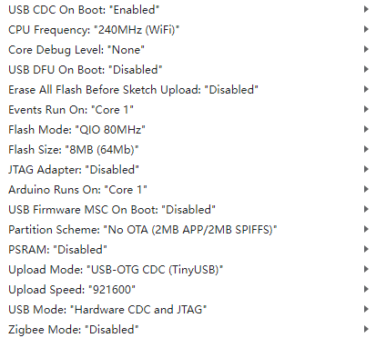
The code folder contentsIMPORTANT: DO NOT change the code UNLESS the manual tells you to — especially
Pinout.cpp. The pinout file maps every wire to the right pin number; change it and nothing will work!
The Arduino IDE board settings are the same as Lab 2 (board = ESP32S3 Dev Module; use the same Tools settings table from Lab 2):
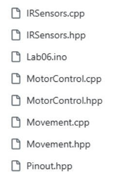
Upload configuration of the boardInstalling the Battery (Step by Step)
Step 1. Open the battery cover on the backside of the car:
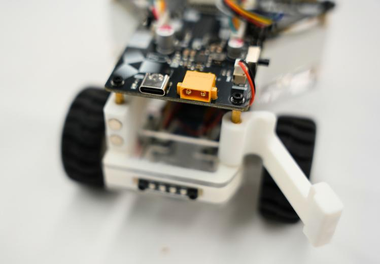
Opening the battery cover on the backside of the carStep 2. Place the battery inside:
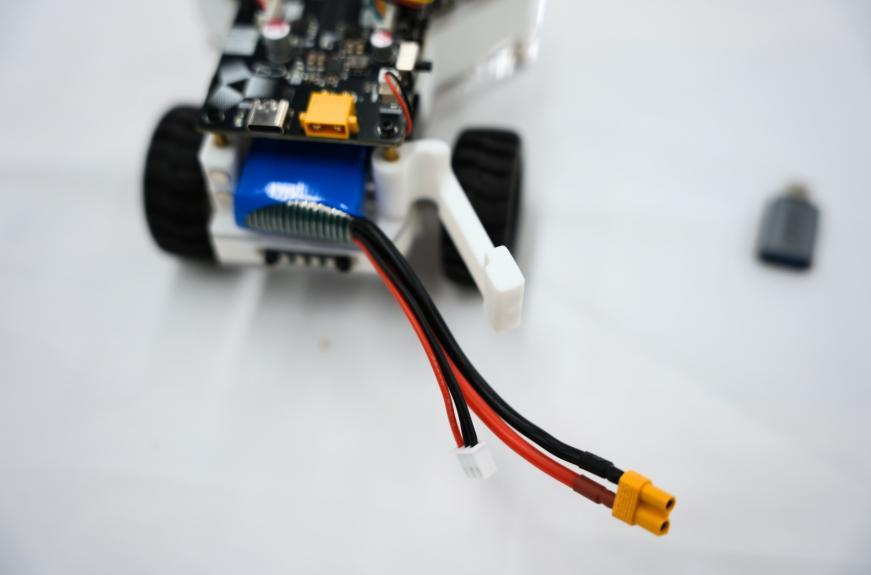
Placement of the batteryStep 3. Close the battery cover:
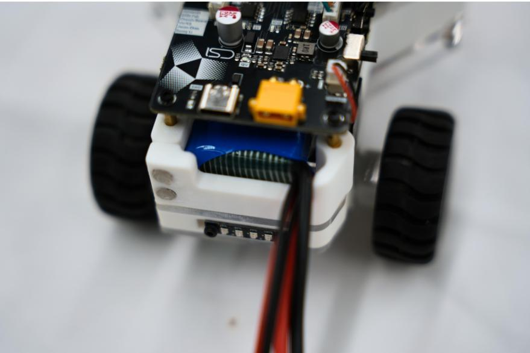
Closing the battery coverStep 4. Plug the battery's power plug (XT30 connector — it only fits one way, never force it) into the socket on the car. The battery voltage indicator will light up:
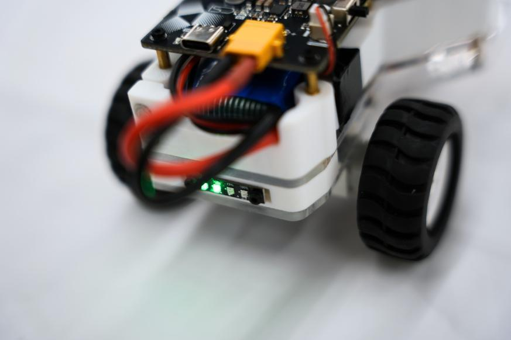
Plug the XT30 power plug — the voltage level indicator lights upFirst Upload — the Blinking LED Test
Step 1. Connect the car with USB and upload the provided test code (press Upload and wait).
Step 2. An LED on the chassis should start blinking:
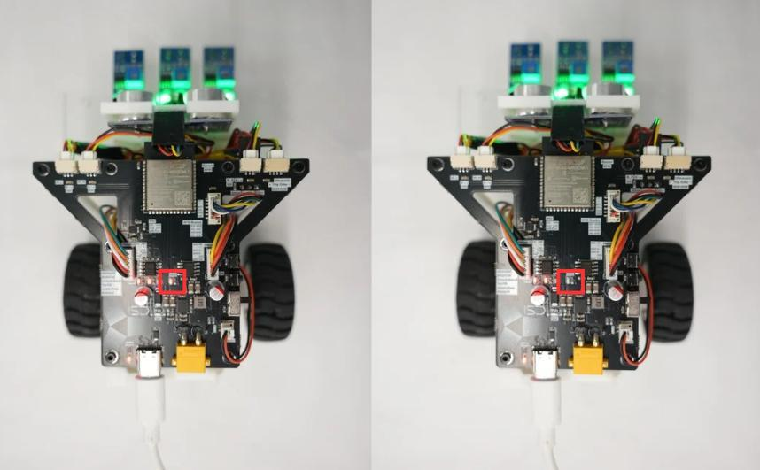
The blinking LED of the car- Check that all the wires are properly connected.
- Plug the Li-Po battery into the power plug.
- Turn on the car.
- Upload the testing code.
- Check whether the LED on the chassis is blinking.
Show your result to the TA / instructor.
Task 2 — Multitasking for ESP32 (FreeRTOS)
(The manual numbers this section "Task 2" even though it comes after Task 3 (Pre) — that's fine, keep reading!)
Background: Why Multitask?
So far our programs used a "superloop": code runs top-to-bottom, forever, one thing at a time. For simple programs that's fine. But imagine the car is trying to reconnect to Wi-Fi and follow a line and read sensors — if the Wi-Fi code gets stuck waiting, everything else stops too. That's like refusing to start your homework until the washing machine finishes — even though the machine runs by itself!
The solution: a multitasking system, where the chip switches between jobs so fast it looks simultaneous. We will use FreeRTOS — a free, open-source Real-Time Operating System (RTOS) that is already built into the ESP32. It is designed for the ESP32's dual-core processor (two "workers" that can run two tasks truly at the same time), with task priorities, precise timing, and tiny memory use.
The Code
Step 1 — Include the FreeRTOS libraries (already in the skeleton):
#include "freertos/FreeRTOS.h"
#include "freertos/task.h"
#include "freertos/semphr.h" // semaphores (task signalling)
#include "freertos/queue.h" // queues (task messaging)
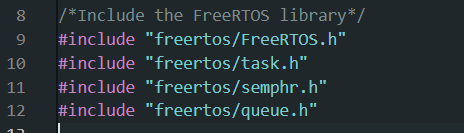
The skeleton code with FreeRTOS enabledStep 2 — Write a task function. In FreeRTOS, instead of putting everything in loop(), you write separate tasks. To create one, a StackType, TaskTCB and TaskHandle are initialized, then the task function looks like this LED blink example:
void Blink(void *pvPara) {
pinMode(LED1, OUTPUT); // setup part — runs once
while (true) { // running part — loops forever
digitalWrite(LED1, HIGH);
vTaskDelay(100); // wait 100 ms
digitalWrite(LED1, LOW);
vTaskDelay(200);
}
}
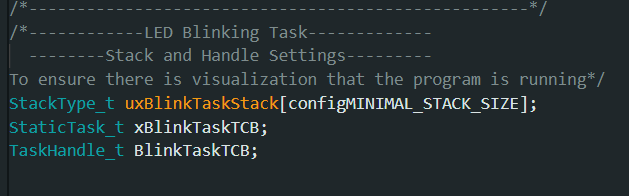
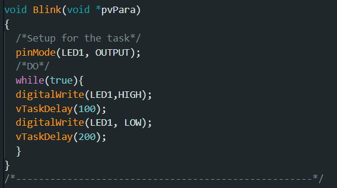
Creating a user task (screenshots from the manual)Every task function follows the template void TaskName(void *pvPara) and has two parts:
- The Setup part — runs only once (e.g.
pinMode) - The Running part — a
while(true)loop that never ends
IMPORTANT — two rules the manual stresses: 1.
void *pvParamust be there, even if you never use it. 2. Inside thewhileloop you must callvTaskDelay(), not Arduino'sdelay(). (In factdelay()secretly callsvTaskDelay()— but usevTaskDelay()directly.) Without avTaskDelay(), your task will never actually run on the MCU! The delay is FreeRTOS's chance to hand the CPU to other tasks.
Step 3 — Create the task and "pin" it to a CPU core, inside void setup():
xTaskCreatePinnedToCore(
Blink, // 1. the task function to run
"Blinking", // 2. a human-friendly name (shows in debugging)
2000, // 3. stack size (bytes of memory given to the task)
NULL, // 4. parameters to pass (NULL = none)
1, // 5. priority (bigger = more important)
&BlinkTaskHandle, // 6. handle to control the task later
1 // 7. which CPU core to pin it to (0 or 1)
);
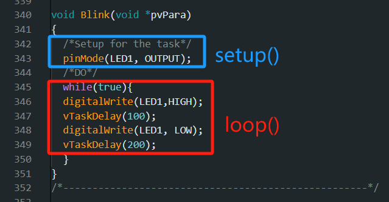
Creating the task and pinning it to a core (screenshot from the manual)Step 4 — Also create the Movement task (bigger stack, because movement code needs more memory):
xTaskCreatePinnedToCore(
MovementTask,
"Movement",
12000, // much bigger stack than the Blink task!
NULL,
1,
&MovementTaskHandle,
1
);
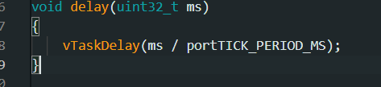
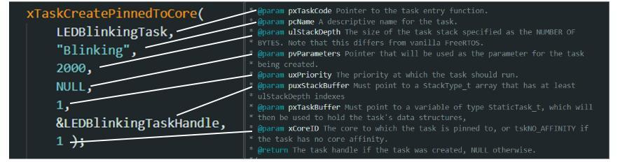
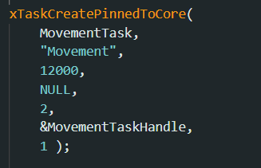
Including the Movement Task (screenshots from the manual)Upload and test. The default behaviour of the car is:
- All IR sensors on a white tile → move forward
- All IR sensors off the ground (white background) → stop
- Otherwise → turn right (left wheel clockwise, right wheel anti-clockwise)
Show your result to the TA / instructor.
Task 4 — Basic Line Tracking
This is the track your car must follow:
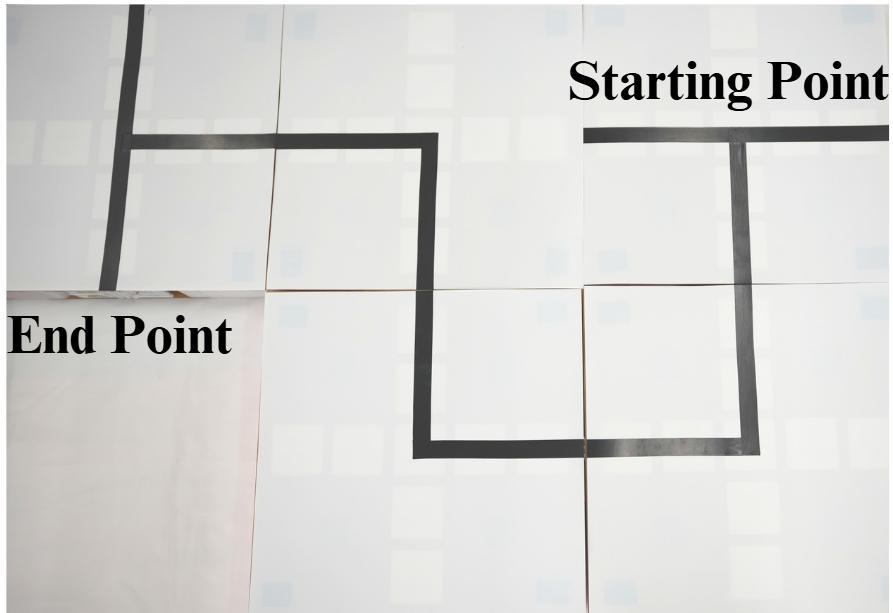
The line tracking mapBackground: How Do IR Line Sensors Work?
Under the car are three IR (infrared) sensors — left, middle, right. Each one shines infrared light at the floor and measures how much bounces back:
- A black surface absorbs infrared → little reflection → output = 1 (HIGH)
- A white surface reflects infrared → lots of reflection → output = 0 (LOW)
The sensor positions and names (defined in IRSensors.hpp):
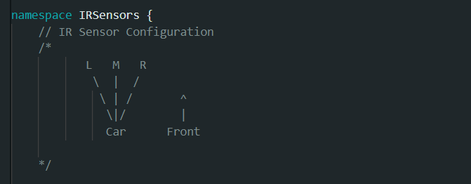
The naming and position of the IR sensors (IR_L, IR_M, IR_R)Each combination of the three sensors maps to a named state, defined by this enum in IRSensors.hpp:
enum RobotState : uint8_t {
Middle_ON_Track, // only the middle sensor sees the line
Left_Middle_ON_Track, // left + middle see the line
ALL_ON_Track, // all three see the line
Right_ON_Track, // only the right sensor sees the line
Left_Right_ON_Track, // left + right (a crossroad!)
Middle_Right_ON_Track,// middle + right
Left_ON_Track, // only the left sensor sees the line
All_OFF_Track // no sensor sees the line
};
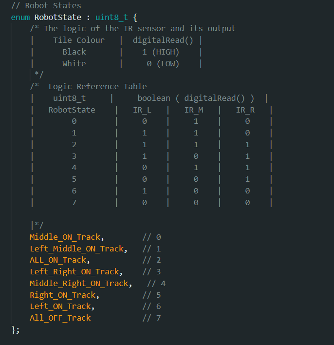
The defined values for each IR sensor condition (screenshot from the manual)The Tracking Logic
The basic idea is simple:
- If the middle sensor is on the dark line → keep going forward
- If the left sensor is on the dark line → the car has drifted right → turn left
- If the right sensor is on the dark line → the car has drifted left → turn right
Plan it with a truth table — a table that says "for these inputs, do this action". The first row is filled in as an example; complete the rest yourself (one row is given per sensor state — think about what each combination means!):
| Left (IR_L) | Middle (IR_M) | Right (IR_R) | State | Action |
|---|---|---|---|---|
| 0 | 1 | 0 | Middle on track | Move forward (example) |
| 0 | 0 | 0 | All off track | your answer |
| 0 | 0 | 1 | Right on track | your answer |
| 0 | 1 | 1 | Middle + right | your answer |
| 1 | 0 | 0 | Left on track | your answer |
| 1 | 0 | 1 | Left + right | your answer |
| 1 | 1 | 0 | Left + middle | your answer |
| 1 | 1 | 1 | All on track | your answer |
The Code You Need to Complete
In void MovementTask(void* pvPara) in the .ino file, the sensor state is read into IRSensors::IRData.state, then a switch statement decides what to do. Your job is to fill in the missing cases:
void MovementTask(void* pPara) {
while (true) {
IRSensors::IRData.state = IRSensors::Readsensorstate(IRSensors::IRData);
switch (IRSensors::IRData.state) {
case IRSensors::Middle_ON_Track:
MotorControl::LeftWheel.Speed = 1000; // set left wheel speed
MotorControl::Rightwheel.Speed = 1000; // set right wheel speed
break;
case IRSensors::Left_Middle_ON_Track:
// implement logic
break;
case IRSensors::ALL_ON_Track:
// implement logic
break;
case IRSensors::Left_Right_ON_Track:
Movement::Stop(); // crossroad → stop (for now)
vTaskDelay(100);
break;
case IRSensors::Middle_Right_ON_Track:
// implement logic
break;
case IRSensors::Right_ON_Track:
// implement logic
break;
case IRSensors::Left_ON_Track:
// implement logic
break;
case IRSensors::All_OFF_Track:
Movement::Stop(); // line lost → stop
vTaskDelay(100);
break;
}
vTaskDelay(100);
}
}
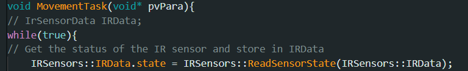
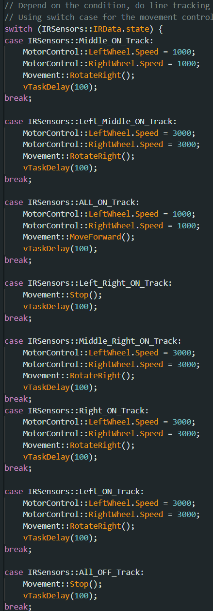
Reading the sensor state and the switch-case (screenshots from the manual)To move the car, use the API from Movement.hpp / Movement.cpp (all functions live in the Movement namespace):
void RotateLeft(); // spin left
void RotateRight(); // spin right
void MoveForward(); // straight ahead
void MoveBackward(); // reverse
void Stop(); // stop
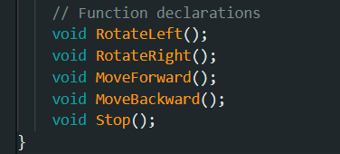
The movement API inMovement.hpp
To actually drive, both wheels need their speeds set, followed by the actuation call:
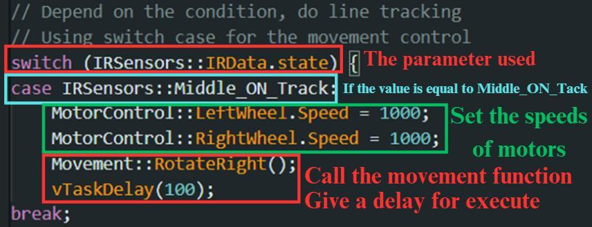
Setting the speeds of both wheels, then actuatingFor the full API manual visit: https://project.isdn2602.site
Procedure
- Put the car at the starting line of the track.
- Power on the car.
- After 1–2 seconds, the car starts to move.
- It should follow the track and stop at the end line.
Finish the truth table, then change the movement functions and wheel speeds carefully until the car follows the whole track.
Change the movement functions inside the switch-case so the car tracks the line, and show your result to the TA / instructor.
Task 5 — Line Tracking with Decision Making
Now the track has a crossroad — your car must make a decision:
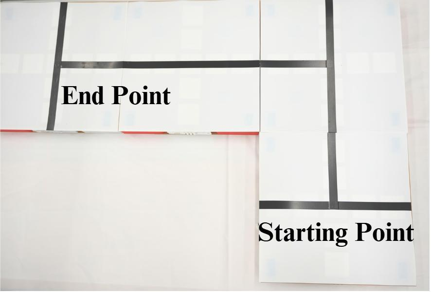
The Task 5 map — note the crossroadIn this task the car needs to make a decision at the crossroad, based on the line-tracking logic you built in Task 4.
Procedure:
- Start the car at the left side of the track.
- After 1–2 seconds, the car starts to move.
- When the car arrives at the crossroad, turn right and follow the left track.
- Stop the car at the end line.
Hint: at a crossroad, all sensors see the line at once — that's the ALL_ON_Track or Left_Right_ON_Track state. Instead of stopping, count a short delay and then rotate...
Modify the logic and conditions of the helper function to finish this task, and show your result to the TA / instructor.
5. Appendix — How fun_dijkstra() Works (Line by Line)
This is the full MATLAB function used in Tasks 1 & 2, with explanations:
function [path, cost] = fun_dijkstra(transition, from, to)
- Inputs:
transition— the weight matrix;from— list of start nodes;to— list of destination nodes. - Outputs:
path— cell array storing the shortest paths;cost— matrix of shortest path costs.
Memory allocation:
path = cell(numel(from), numel(to));
cost = zeros(numel(from), numel(to));
One slot in path and cost for every start–destination pair.
Main variables:
count = min(size(transition)); % number of nodes
parent = zeros(count, 1); % parent(n) = which node we reached n from
loss = inf(count, 1); % loss(n) = best known distance so far
Loop over every start node m:
for i = 1:numel(from)
m = from(i);
if issparse(transition)
index = transpose(full(transition(m, :) > 0.0));
index(m) = true;
else
index = transpose(not(isinf(transition(m, :))));
end
index marks which nodes are directly reachable from m (weight is not inf).
loss(:) = inf; % reset all distances
loss(index) = transpose(transition(m, index)); % known direct distances
parent(:) = 0; % reset parents
parent(index) = m; % they all came from m
queue = find(index); % queue of nodes to examine
The Dijkstra main loop — exactly the algorithm from Section 2.4:
while not(isempty(queue))
k = queue(1); % pick the first node in the queue
distance = transpose(loss(k) + transition(k, :)); % new distances through k
index = distance < loss; % where is going through k shorter?
if issparse(transition)
index = and(index, full(transpose(transition(k, :) > 0)));
end
if any(index) % found improvements!
loss(index) = distance(index); % update best distances
parent(index) = k; % remember we came through k
queue = cat(1, queue(2:end, :), find(index)); % add improved nodes to queue
else
queue = queue(2:end, :); % no improvement → drop this node
end
end
Backtracking — rebuild the path by walking backwards from the destination, following parent:
for j = 1:numel(to)
path{i, j} = zeros(size(parent));
n = to(j); % start at the destination
for k = numel(parent):(-1):1
if or(eq(m, n), eq(n, 0))
break % reached the start node (or no path)
end
path{i, j}(k) = n; % record node
n = parent(n); % hop to its parent
end
if eq(m, n) % we successfully walked back to m
path{i, j}(k) = n;
path{i, j} = path{i, j}(k:end); % trim the leading zeros
else
path{i, j} = []; % no valid path exists
end
end
cost(i, :) = loss(to); % store the shortest path costs
end
end
— End of Lab 5 —